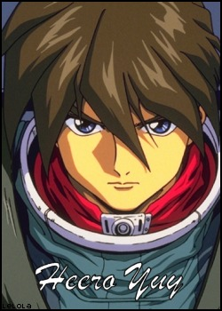

|  | Heero can be considered the main character of Gundam Wing. With a dark and mysterious past, Heero's humanity was taken from him leaving him feeling that emotions weren't needed. He plans everything perfectly and leaves no room for mistakes, and he'll do whatever it takes to complete his missions - even if it means his own life. His skills as a pilot are exceptional and Heero is even able to master the infamous Zero System. Thus, Heero is thought to be a perfect solider, however, he has feeling for Relena that he tries to keep hidden. This is just further proof that deep inside he has a kind heart that wishes to be freed. |
| Duo is the most relaxed and free-spirited pilot. At a young age, he was taken in and raised at Maxwell church. After this church was destroyed, he took the identity of the God of Death, and took the last name of "Maxwell". It is also for this reason that Duo dresses in the outfit of a priest. Duo, ironically, calls himself the God of Death and will kill anyone that stand in his path. His attitude is different from the other gundam pilots. This, however, proves to be an asset as his charming personality comes in handy more than once. |
| Quatre is the kindest and most peaceful of the pilots. He will even apologize to his opponents before destroying them. Quatre doesn't fight unless he feels that has to and believes strongly in peace. With his caring personality, he acts as a link between the pilots keeping them together. Quatre is also the only son of the wealthy Winner family, but gave everything up in order to fight for what he believes in. In AC 193, he saved Maganac Corp leader, Rasid, and earned their respect. The Maganac Corps became his loyal friends and protectors, and stay by Quatre's side through think and thin. Throughout the series, Quatre proves time and again that his heart is pure and that peace is achievable. |
| Trowa is the quietest of the mobile pilots and hides himself within a traveling circus. He makes a very sad clown and even the mask he uses to cover half his face acts as a sad metaphor to the pain and loneliness within his heart. At times, he's unsure of himself and compares himself to Heero. This proves to be a weakness as he makes his decisions too quickly without thinking them through. Trowa also pretends to be other people. He assumes the name "Trowa" after witnessing the death of the real Trowa. Before that, he would call himself "no name". He's actually quite depressing an incapable of expressing many emotions. Trowa finds a sense of friendship within the mobile suit pilots that he never felt before, and this allows him to begin to feel. |
| Wufei is proud, strict, and arrogant. This makes him extremely annoying to be around. He also has a strong sense of honor that leads him to be stuck in his ways. He fails to open up his eyes and see the big picture. He doesn't like accepting help and therefore doesn't get along that well with the other Gundam pilots. He does, however, have respect for Heero and Major Sally. Within his head, Wufei struggles to find his true purpose. Even though Wufei may be annoying, he's a key member of the team. |
| Relena is the surviving daughter of the Sanc Kingdom and heir to the throne. She is the also little sister of Milliardo. However, unlike her brother, she believes in the idea of total pacifism. At a young age, the Darlian family took her in and she considers them her family. Relena rose to be leader of the Sanc Kingdom and later Queen of the World under OZ. Her strong personality and ability to stand up for her beliefs leads her role in Gundam Wing to be second only to Heero's. She has feeling towards Heero, but he doesn't always return them. |
| Milliardo Peacecraft felt that his hands were stained with blood, so he took on the name Zechs Merquise and befriended Treize. He hid his identity under a mask and graduated with the highest marks at the Specials' Lake Victoria academy along with Noin. He has a connection with Noin and she always stays by his side. Milliardo is an excellence pilot and has a great sense of honor. He watches over Relena, and even though he doesn't always show it, he cares about her very much. He fights to correct the wrongs in the past and this merely proves that he is a strong person inside and out. |
| Noin is an OZ officer at the beginning of the series, but after she realizes what's really going on, she breaks off on her own. She knows of Zechs' identity and has been close to him for years. Along with Zechs, she graduated with the highest marks at the Specials' Lake Victoria academy. She has feeling for Zechs and because of this, she always stays by his side. Seeing how much Zechs cared about his sister, Noin befriends Relena and acts as her protector in Zechs' place. She is clam, cool, quick, loyal and aids the pilots whenever she can. |
| Lady Une is an OZ officer that serves under Treize. Being with Treize has caused her much confusion and due to this, she has developed split personalities. One side of her is cruel, mean, evil and strict. The other is kinder and wishes for peace. Deep inside she is a mixture of the two. It's only after she loses the one she loves, that she finds her way. |
| Treize is one of the oddest characters in Gundam Wing. He is a member if the Romefellar Foundation and leader of the Specials. In AC 193, he became the leader of OZ. Once friends with Zechs, he is aware of his true identity of Milliardo Peacecraft. Treize believes war is beautiful, however, he finds the thought of mobile dolls disgusting. According to him, wars are based on the people and their emotions. Without people, wars are meaningless. It's due to this that his thoughts and frame of mind are rather confusing. |
| Dorothy has an odd fascination with war and seems to enjoy it passionately. She also looks up to Relena and was a student under her teachings of total pacifism. She is related to the Romefellar Foundation, however, she is an individual with strange morals. Dorothy looked up to Relena's brother, Milliardo, and ended up controlling mobile dolls for the White Fang. The things that bring her happiness are war, death, and fighting, however, as Quatre discovers, there is more to her than meets the eye. |